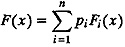
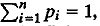
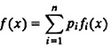
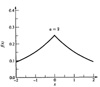
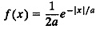
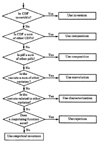

| Previous | Table of Contents | Next |
This technique can be used if the desired CDF F(x) can be expressed as a weighted sum of n other CDFs F1(x), F2(x),..., Fn(x). That is,

Here, pi ≥ 0,  and Fi’s are distribution functions. The number of functions n can be finite or infinite. Thus, n CDFs are composed together to form the desired CDF; hence, the name of the technique. Another view of the same process is that the desired CDF is decomposed into several other CDFs. This is why the same technique is also called decomposition.
The technique can also be used if the density function f (x) can be expressed as a weighted sum of n other density functions:

In either case, the steps to generate X are as follows:
P(I = i) = pi

FIGURE 28.3 Laplace density function.

A plot of the pdf with a = 2 is shown in Figure 28.3. The pdf is a composition of two exponential pdf’s. The probability of x being positive is ½. Similarly, the probability of x being negative is ½.
Using the composition technique, Laplace variates can be generated as follows:
It must be pointed out that Laplace variates can be generated more efficiently using the inverse-transformation technique.
This technique can be used if the random variable x can be expressed as a sum of n random variables y1, y2,..., yn, that can be easily generated; that is,
x = y1 + y2 + ... + yn
In this case, x can be generated by simply generating n random variate yi’s and then summing them.
If x is a sum of two random variables y1 and y2, then the pdf of x can be obtained analytically by a convolution of the pdf’s of y1 and y2. This is why the technique is called convolution, although no convolution is required in random-number generation.
Notice the difference between composition and convolution. The former technique is used when the pdf or CDF can be expressed as a sum of other pdf’s or CDFs. The latter technique is used when the random variable itself can be expressed as a sum of other random variables.
Some examples of applications of this technique are as follows:
Special characteristics of some distributions allow their variates to be generated using algorithms specially tailored for them. All such algorithms are classified under the technique of characterization.
Examples of randorn-variate generation using characterization are as follows:

FIGURE 28.4 Finding a random-variate generation technique
Figure 28.4 presents a flow chart that will help you decide which of the preceding techniques to use for a particular case. If the CDF is easily invertible, inverse transformation is the best choice. Otherwise, if either the CDF or pdf can be expressed as a sum of other CDFs or pdfs, the composition method can be used. If the variate can be expressed as a sum of other variates, use convolution. Characterization can be used if the distribution has some known properties that can be exploited for random-variate generation. Finally, if the pdf is such that a majorizing function can be found, the rejection technique can be used. If all else fails, you can always use empirical inverse transformation by numerically computing the distribution function and using it as illustrated earlier in Example 28.2.
28.1 A random variate has the following triangular density:
f(x) = min(x, 2 – x) 0 ≤ x ≥ 2
Develop algorithms to generate this variate using each of the following methods:
| Previous | Table of Contents | Next |
){kind=link}
){kind=link}
){kind=link}
){kind=link}